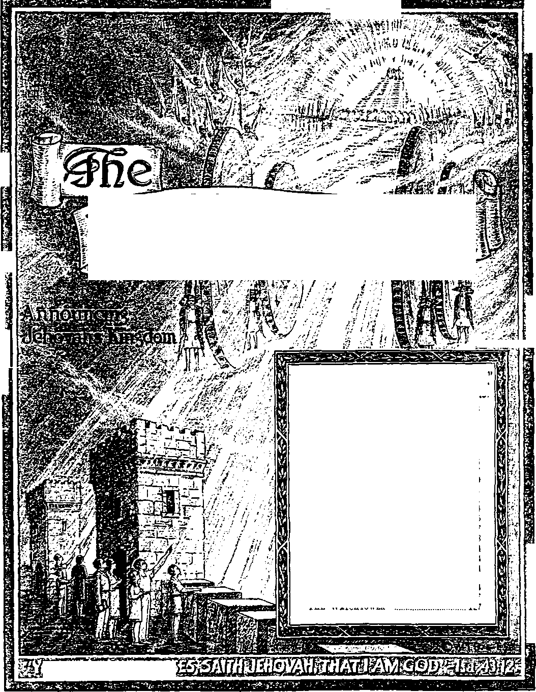

£
WBMBa
s?;
£
g-agsgffly&ra
t kI
r-s-
B $ l:
5 & *
-Ezekiel 35:15.
Vol. LXIV Semimonthly
APRIL 15, 1943
CONTENTS
No. 8
Suffering Precedes First Resurrection 115
The Issue........................................
Suffering for Well-Doing...........
The “First Resurrection” ............
Preaching to Spirits in Prison .
Baptism unto the Greater Noah .. Shem and His Blessing .............
Resolution (Letter) .......................
Field Experiences ..........................
“Call to Action” Assembly .......
117
119
121
121
124
125
127
128
114
114
“Watchtower” Studies ............... “Call to Action” Testimony Period .... 114 “Fighting for Liberty
on the Home Front” Memorial ...............................
“The Watchtower” ..........
114
127
127
Published Semimonthly By
WATCH TOWER BIBLE & TRACT SOCIETY
117 Adams Street - - Brooklyn, N.Y., U.S.A.
Offtckbs
N. H. Knobb, President W. E. Van Ambubgh. Secretary
“And all thy children shall be taught of Jehovah; and great shall be the peace of thy children.” - Isaiah 54:13.
THE SCRIPTURES CLEARLY TEACH
THAT JEHOVAH is the only true God and is from everlasting to everlasting, the Maker of heaven and earth and the Giver of life to his creatures; that the Logos was the beginning of his creation, and his active agent in the creation of all other things, and is now the Lord Jesus Christ in glory, clothed with all power in heaven and earth, as the Chief Executive Officer of Jehovah;
THAT GOD created the earth for man, created perfect man for the earth and placed him upon it; that man willfully disobeyed God’s law and was sentenced to death; that by reason of Adam’s wrong act all men are born sinners and without the right to life;
THAT THE LOGOS was made human as the man Jesus and suffered death in order to produce the ransom or redemptive price for obedient ones of mankind; that God raised up Jesus divine and exalted him to heaven above every other creature and above every name and clothed him with all power and authority;
THAT JEHOVAH’S ORGANIZATION is a Theocracy called Zion, and that Christ Jesus is the Chief Officer thereof and is the rightful King of the world; that the anointed and faithful followers of Christ Jesus are children of Zion, members of Jehovah’s organization, and are his witnesses whose duty and privilege it is to testify to the supremacy of Jehovah, declare his purposes toward mankind as expressed in the Bible, and to bear the fruits of the Kingdom before all who will hear;
THAT THE OLD WORLD ended in A. D. 1914, and the Lord Jesus Christ has been placed by Jehovah upon his throne of authority, has ousted Satan from heaven and is proceeding to the establishment of the “new earth” of the New World;
THAT THE RELIEF and blessings of the peoples of earth can come only by and through Jehovah’s kingdom under Christ, which has now begun; that the Lord’s next great act is the destruction of Satan’s organization and the complete establishment of righteousness in the earth, and that under the Kingdom the people of good-will that survive Armageddon shall carry out the divine mandate to “fill the earth” with a righteous race.
“CALL TO ACTION" ASSEMBLY
Three hundred cities from coast to coast have been selected for the nation-wide gathering of Jehovah’s people dunng the “Call to Action” Testimony Period, in the month of April. The Assembly days are Saturday and Sunday, April 17 and IS. 1943, just before the date for celebrating the memorial of Christ’s death. In line with transportation and fuel restrictions, this spreading of assembly points will obviate all need of long-distance traveling and will make the Assembly accessible to everyone making a little effort to attend Because of the importance of each feature, all gatherings will follow identically the same program, with like materials for presentation. It will be two days of edifying association together m field service, worship, special exhortation and instruction. All persons bearing good-will should be urged and helped to attend This will be a most worthy preliminary to observing the Lord’s supper the next day. Get in touch with the local company of Jehovah’s witnesses for fuller facts, or, if necessary, write us for assembly-point addresses nearest to you.
“WATCHTOWER" STUDIES
Week of May 16: “Suffering Precedes First Resurrection,” fl 1-14 inclusive, The Watchtower April 15, 1943.
Week of May 23: “Suffering Precedes First Resurrection,” fl 15-29 inclusive, The Watchtower April 15,1943.
Week of May 30: “Preaching to Spirits in Prison,” fl 1-20 inclusive, The Watchtower Apnl 15, 1943.
ITS MISSION
HIS journal is published for the purpose of enabling the people to know Jehovah God and his purposes as expressed in the Bible. It publishes Bible instruction specifically designed to aid Jehovah’s witnesses and all people of good-will. It arranges systematic Bible study for its readers and the Society supplies other literature to aid in such studies. It publishes suitable material for radio broadcasting and for other means of public instruction in the Scriptures.
It adheres strictly to the Bible as authority for its utterances. It is entirely free and separate from all religion, parties, sects or other worldly organizations. It is wholly and without reservation for the kingdom of Jehovah God under Chnst his beloved King. It is not dogmatic, but invites careful and critical examination of its contents in the light of the Scriptures. It does not indulge in controversy, and its columns are not open to personalities.
YEARLY StmSCBIPTtON PRICE
United States, 11.00; all other countries, 51.50. American currency; Gbeat Britain, Australasia, and South Africa, 6s. American remittances should be made by Postal or Express Money Order or b> Bank Draft. British. South African and Australasian remittances should be made direct to the respective branch offices. Remittances from countries other than those mentioned may be made to the Brooklyn office, but by International Postal Money Order only.
Foreign Offices
British............ 34 Craven Terrace. London, W 2. Fnpland
Australasian 7 Beresford Road, Strathfield. N. S W„ Australia
South African Boston House. Cape Town. South Africa
Indian __________________________________40 Colaba Road. Bombay 5. India
Please address the Society in every case.
Translations of this journal appear in several languages
ALL SINCERE STUDENTS OF THE BIBLE who by reason of Infirmity, poverty or adversity are unable to pay the subscription price max have The Watchtower free upon written application to the publishers, made once each year, stating the reason for so requesting in We are glad to thus aid the needy, but the written application once each year is required by the postal regulations.
Notice to Subscribers Acknowledgment of a new or a renewal subscription will be sent only when requested Chance of address n hen requested, may be expected to appear ou address label within one month A renewal blank (earning notice of expiration I will be sent with the journal one month before the subscription expires.
Printed in the United States of America entered as second-class matter at the post office at Brootlyn, .V F , under the Act of March 3, 1S79
“CALL TO ACTION” TESTIMONY PERIOD
The three-month Watchtower campaign is now in its final month (April), which month is designated “Call to Action” Testimony Period Certainly with ail evidences multiplying tn the earth that the world is m its “time of the end” this is no time for inaction on the part of'those who seek to survive into the new world. Psalm 147 emphatically shows it is time for action in piaising Jehovah God, who piovides the new world and its Theocratic Government. With spring beginning, all Kingdom publishers and Watchtower readers should arouse themselves to united activity in this educational campaign. Let as many people as possible have the opportunity to take advantage of the special offer, of a whole year’s Watchtower subscription and the book The New World and the booklet Peace—Can It Last! on a contribution of but $1.00 Obey the divine call to praise Jehovah and to let his word run swiftly through the earth. (Ps. 147: 15) We shall welcome inquiry from every interested subscriber or reader who wants to share in this united testimony here m America and elsewhere where this magazine may still be circulated. We shall be glad to put any such in touch with the local company of Kingdom publishers with whom to join in action.
“FIGHTING FOR LIBERTY ON THE HOME FRONT"
The front cover of this new 32-page booklet will strike your eye, as it attractively depicts the several vital and greatly (Continued on page 127)
Vol. LXIV April 15, 1943 No. 8
"Do good; and dwell for evermore. For the Lord loveth judgment, and forsaketh not his saints; they are preserved for ever.”—Ps. 37:27,28.
JEHOVAH is good and upright, because he is righteous. Mercifully he points out the right way to those who have erred. “Good and upright is the Lord: therefore he pointeth out to sinners the right way.-’ (Ps. 25:8, Leeser's translation) Those who realize they have taken the wrong way and who are afflicted in spirit because of it Jehovah invites to “taste and see that the Lord is good”. He assures them that the young lions depend upon their own strength and might and yet do suffer hunger, but that ’they that seek after the Lord shall not want any good things’. (Ps. 34: 8,10) Such as seek him find that Jehovah’s goodness and mercy follow them all the days of their life, though they be in the midst of the enemies of truth and righteousness. (Ps. 23: 6) Such goodness, experienced while yet wickedness prevails in the earth and causes so much suffering, is merely a foretaste of Jehovah's boundless goodness which those who “do good" shall forever enjoy in the New World of righteousness. Therefore all those who love life and want to see good for many davs must now depart from evil-doing and must do well.—Ps. 34: 12-14.
1 How can Almighty God be good when he permits cruel oppression upon the people, besides which they are afflicted with war, famines, earthquakes, pestilences, storms, floods, and other large-scale deathdealing forces? Can God be good when he looks on while those who seek to do right and to live in harmony with the Bible suffer persecution and death at the hands of lawless, selfish and violent men ? Yes; and the end of the matter proves it overwhelmingly. His permission of such deeds and conditions is no reason for charging Jehovah God with being the source of such and being responsible therefor. The Devil and his demons are the chargeable ones. Religion has greatly blasphemed and defamed God’s name by telling men that by such distressing means God is punishing them in order to turn them to religion and to obedience to its priests. In so instruct-
ing the people religion shows it is not of God, but is of God’s enemies, the wicked demons. Religion never succeeds in bringing the people to God. It brings them into the clutches of the clergy and under the power of a demonized priesthood, and increases the mental distress, confusion and bondage of the people. Despite the accusations by religion, God’s goodness stands out beyond denial: “The living God, which made heaven, and earth, and the sea, and all things that are therein: who in times past suffered all nations to walk in their own ways. Nevertheless he left not himself without witness, in that he did good, and gave us rain from heaven, and fruitful seasons, filling our hearts with food and gladness.” —Acts 14:15-17.
’ God might justly have been more severe before now. Why! His own Word declares: “For there is not a just man upon earth, that doeth good, and sinneth not.” (Eccl. 7:20) “The Lord looked down from heaven upon the children of men, to see if there were any that did understand, and seek God. They are all gone aside, they are all together become filthy: there is none that doeth good, no, not one.” (Pss. 14: 2, 3; 55: 2, 3) “For wre have before proved both Jews and Gentiles, that they are all under sin; as it is written, There is none righteous, no, not one.” (Rom. 3: 9,10) Then the one who honestly sees the plight of humankind cries out: “If thou. Lord, shouldest mark iniquities, O Lord, who shall stand? But there is forgiveness with thee, that thou mayest be feared.” (Ps. 130: 3, 4) Hence, instead of his long-suffering toward imperfect, selfish, wayward mankind the Creator might have taken more drastic action and wiped the earth clean of them all. Remember the flood of more than four thousand years ago, 1,65G years after the creation of man upon this earth. It operated to cleanse the earth that was filled with violence and extreme wickedness of men whose every imagination was only evil continually. Only God’s promise now stands against repeating such flood.
4 No human could have survived the deluge except
3. Why, and with what Scriptural illustration to show in support, could God justly have been more severe toward humankind before 10431 2 3 4. How was it that any humans could survive that deluge, and wbj9 115
by being forewarned and then being miraculously protected and preserved throughout the one year and ten days that the floodwaters were upon the earth until the great sea basins were formed to take care of them. In fairness and mercy Jehovah God did give many years of warning by a preacher of righteousness, Noah. Then, while a whole world was being destroyed about them, God displayed his power to preserve a handful of humans, who believed his word and feared his power to execute the wicked. Eight humans survived that world disaster, in an ark built at God’s command and according to His design.
5 Were it not for the survival of those eight souls by God’s direct provision there would not be any human race on earth now, except by his producing a new race descended from new parents of God’s direct creation. When the flood struck, no ransom had yet been paid to God to redeem what rebellious Adam had lost, and hence no resurrection of any of the antediluvian dead would have been possible. It was first more than two thousand years later that Jehovah God sent his only begotten Son to earth and provided through him the ransom. Why, then, Almighty God did not wipe out all humans at the flood or before, and why he has shown such forbearance with the race till now, will transpire as this subject unfolds. Suffice it to say that His unimpeachable goodness stands revealed in bringing Noah and his family alive out of the ark into an earth wherein was no violence or wickedness. Those that engaged in such things had been removed from the face of the ground. Then while Noah and his household were worshiping their Savior free from all molestation by such violent and wicked ones, there came from heaven this divine mandate: “Be fruitful, and multiply, and replenish the earth.” (Gen. 9: 1, 7) Noah's sons and their wives fulfilled this mandate only in a typical way, foreshadowing its complete fulfillment by men of good-will on earth in the New World. The time for this is near at hand.
6 Through Noah’s household the good Lord God gave the second righteous start to the human family. The original start God gave in Eden's garden, and it was a perfect as well as righteous start. Hence it is written: “Lo, this only have I found, that God hath made man upright; but they have sought out many inventions.” (Eccl. 7:29) Also the prophet Moses declares: “Ascribe ye greatness unto our God. He is the Rock, his work is perfect: for all his ways are judgment: a God of truth and without iniquity, just and right is he. They have corrupted themselves, their spot is not the spot of his children: they are a perverse and crooked generation.” (Deut. 32: 3-5) Jehovah God created the first man and his mate perfect, innocent, sinless. To them He gave the law of life everlasting. Not only they, but their offspring, might enjoy that life everlasting in an Eden on earth. To Adam and Eve God sent forth this divine mandate: “Be fruitful, and multiply, and fill the earth, and subdue it, and rule over fish of the sea, and over fowl of the heavens, and over every living thing that is creeping upon the earth.” (Gen. 1:28, Young’s) There was then peace on earth. No wickedness existed; and the lower animal creation were all subjected to a perfect human master.
’ Take sharp notice of this, then, that God did not purpose that earth should be a place of war, calamity, suffering, and death to man. Neither did God purpose that suffering of any kind should be a condition before man could gain everlasting life on earth. Adam and Eve had perfect conditions under which to fulfill the divine mandate to the ends of the earth. They had the divine law and the warning against disobeying it. They had the right to perfect life on earth. They could make that right to life permanent by keeping their integrity or innocence toward their Maker, lovingly obeying his law under the painless test of obedience, which test God laid upon them. God gave them the truth, and there was no religion on earth. Hence there were no wicked ones to persecute Adam and Eve or to make them suffer unjustly for keeping God’s law blamelessly and worshiping Him as holy, true, supreme and almighty.
8 Certainly, then, the sufferings of the human family can in no wise be traced to Jehovah God. The race has its first parents to blame for being plunged into imperfection, sin and wickedness, and death, amid evil conditions on earth. (Rom. 5:12; 1 Cor. 15: 21, 22) Man has religion to thank for such, which religion Adam and Eve adopted in Eden in place of continuing to worship Jehovah God. (Gen. 3:1-5; 2 Cor. 11: 3,13-15) Moreover, for almost six thousand years, from martyred Abel forward, Jehovah God has raised up his witnesses to testify against religion and its sins and to point the people to the worship of God in spirit and in truth. Had mankind heeded these Jehovah’s witnesses and not scoffed at them, despitefully used them and religiously tried to destroy them and their message from God, the situation on earth would be far different today. Instead of totalitarian oppression, a government of God’s own establishment and operation, that is, a Theocracy, would be the accepted rule of the people throughout the earth. Its blessings would be abounding to a people free from want, free from war, dictatorship and aggression, free from demon rule
7 . How did conditions in Eden show it was not God's purpose that earth should be a place of suffering for man?
8 To whom and what, then, must suffering of the human family be traced, and what would be their earthly condition today had they heeded Jehovah's witnesses9 and religious confusion, and free from even the fear of death. (Matt. 23: 34-38; Ps. 2:10-12; Jer. 23: 22) But it is not so now. Why, then, has God permitted Adam and Eve to start a fallen race outside of Eden, and then permitted this race to exist on and to suffer these thousands of years! Not only that, but, Why has Jehovah God permitted lovers of right and truth, his own witnesses, to suffer wicked abuse, persecution and martyrdom unjustly at the hands of the fallen, disobedient, religionized race? God's Word answers.
THE ISSUE
* The Devil, not God, forced suffering upon humankind. God has permitted the suffering of his faithful creatures on earth solely to serve the loftiest purpose. A serious issue of the greatest importance has been forced, which issue affects the well-being and good of the entire universe and not merely of man. Its settlement requires suffering of creatures on earth. From eternity past and until man’s rebellion in Eden there was no question of Almighty God’s supremacy and universal domination. Man did not raise it. Who did? Man's invisible overlord, Lucifer, the “anointed cherub”. He was in Eden and was stationed over man by Jehovah God for man’s good and to maintain Jehovah’s domination representatively in the earth. It was a Theocratic arrangement, and it was good. This mighty spirit creature, Lucifer, was unseen to the eyes of Adam and Eve. There is no record that he materialized in flesh and manifested himself to them. As a creation and son of Jehovah Lucifer was perfect and glorious. To him these words are addressed: "Thou hast been in Eden the garden of God; . . . Thou art the anointed cherub that covereth [God's interests in connection with man]; and I have set thee so: . . . Thou wast perfect in thy ways from the day that thou wast created, till iniquity was found in thee. . . . Thine heart was lifted up because of thy beauty, thou hast corrupted thy wisdom by reason of thy brightness.” (Ezek. 28: 13-17) Lucifer's name means “brightness”. Being lifted up with pride, he fell into condemnation as a devil.—1 Tim. 3: 6.
10 Lucifer knew of God’s law issued to Adam and his wife: "Of the tree of the knowledge of good and evil, thou shalt not eat of it: for in the day that thou eatest thereof thou shalt surely die.” (Gen. 2:17) As “cherub” or invisible overlord appointed by Jehovah, Lucifer was obligated to enforce that law. He must act as God’s executioner should man break it by disobedience. Faithfulness required Lucifer to uphold the majesty of God’s law and act according to it as supreme. Would Lucifer rule that humankind should obey it rather than any creature?
y Who forced suffering upon humankind, and by reason of what issue? and what was the setting in Eden at the time’
10 Because of his position, what was Lucifer obligated to uphold and enforce, and upon what course of aggression did be set out?
Lucifer chose to flout God’s law and to substitute for it his own law or ruling. In Eden he stood at the fountainhead of the human race. He saw the opportunity to set himself up over the race as god and to dominate it as God Jehovah dominates the universe. For Lucifer the gaining of control of the earth would be the start of a movement to usurp universal domination out of the hands of Jehovah. Lucifer was sure he could awaken selfishness in others and thereby win others to his side both in earth and in heaven. Anyway, reasoned he, what right has Jehovah to the universal domination, especially if someone stronger than he shows up? Why should not Lucifer make himself the totalitarian ruler of earth and all the universe? To this nefarious ambition against his Father and God Lucifer yielded and set out upon a course of aggression. Thereby he made himself God’s adversary, or, “Satan.” (See Isaiah 14:12-14.) Man became the first victim of Lucifer’s aggression. He challenged the supremacy and universal domination of Jehovah. That now became the issue.
11 By means of a demonized serpent Lucifer, now Satan, hacked away first at the dignity of God's law and questioned its application to humankind. He argued it was misframed, invalid on its face, discriminatory. Man, even judging for himself, should see that it was wrong and oppressive, depriving man of his rights and liberties. Satan, by the serpent, induced Eve to believe this. He thus maligned God s name as the Supreme Judge and Lawgiver, and represented God’s word as a lie and falsity. He challenged God’s right to domination in the earth, and hence in the rest of the universe. Knowing of his own authority as God’s executioner, traitorous Lucifer said to Eve: “Ye shall not surely die." So “the serpent beguiled Eve through his subtilty”, and she selfishly broke the perfect and supreme law of God. Adam, confronted with the situation, refused to prove Satan a serpent and liar, or to uphold Jehovah’s universal domination, the supremacy of His law, the truth of His word, and the honor and holiness of His name as God. Rather than be estranged from his wife and possibly be deprived of her by execution of the penalty of God’s law, Adam chose to retain her selfishly and maintain peace in the family by adopting together with Eve the religion of Devil worship. Adam sinned.
12 Having thus gained man to his side of the issue of universal domination, renegade Lucifer then set himself up as a law unto himself. He refused to fulfill his office as a subject of Jehovah, whom he now defied. He refused to punish sin and disobedience against God and execute the wicked. His failure to
11 How did Satan argue to Eve concerning God's law and malign God's name and position’ and with what result?
12 . How did the renegade Lucifer set himself up as a law unto himself, and what must Jehovah God then do toward Adam and Eve? put Adam and Eve to death that day was the first ease of non-feasance in office. Lucifer chose not to act as executioner of God, in order to give the lie to God’s law which fixed the penalty, death. Jehovah God must enforce his own law. He executed it against Adam and Eve, first depriving them that “day” of their right to life and then driving them out of Eden to die before a “day” or period of one thousand years was up. (2 Pet. 3: 8) Hence, instead of serving as executioner of God, Lucifer’s work became that of a murderer, because he was the inducer to the sin which brought man's death.—John 8: 44; 1 John 3:12,15.
” Lucifer’s wicked course and his success with Adam and Eve set in doubt the integrity of Jehovah's entire intelligent living universe. His established government over the Edenic earth had been corrupted, and his name and universal domination had been set on issue thereby. Immediately therefore, at Eden, Jehovah made the promise that out from his “woman” or universal organization of faithful creatures He would bring forth a Government, a “Seed”; and that Government would remain faithful to Jehovah God, even though it would be permitted to suffer bruising in “his heel” by Satan and his “seed” or government. Moreover, the Government of God’s “Seed” would execute God’s law against sinners and rebels, including Satan the Serpent himself and his wicked government over earth. —Gen. 3:15.
14 For this compelling reason Jehovah did not at once destroy Satan there at Eden, nor did he destroy the government Satan had set up over humankind; nor did he immediately destroy the subjects of that government, Adam and Eve, to prevent their having offspring. To the “Seed” or Government that would issue forth from his “woman” Jehovah God assigned that privilege of executing Satan and his government and all the wicked, and thereby vindicating God’s name. For like reason Jehovah did not stop all efforts of Satan to extend his power in the heavens and thereby show how far he could succeed toward universal domination. Many angels were tested thereby and were seduced and became demons under Satan. But to his promised “Seed” Jehovah assigned the honor and duty to stop Satan and his wicked organization with destruction in God's due time. First, though, the test of Satan's power to accomplish his ends must be permitted that his ultimate failure might prove him a liar and false god before all creation.
” Satan the Serpent caught the force of God’s prophecy. (Gen. 3:14,15) He saw it meant in the
13 . What vas set in doubt and on issue by Satan** success with Adam and Ete, and what promise did Jehovah then make ns to the issue’ 14. For that reason what did Jehovah refrain from doing, and what assignment of service did he make to the promised Seed**
15 . In God’s promise what did Satan perceive concerning ids own self, and therefore what did he challenge God to do, so making it an issue’ end his debasement from heaven to the earth to a position like that of a snake crawling upon his belly, and then being crushed to death. He saw too that God was allowing to him the wide-open opportunity to bruise painfully the “heel” of the “Seed”. In burning enmity or hatred of that promised thing, the “Seed”, Satan determined to do his worst against it, whenever it should appear. Hence Satan challenged God to put on earth creatures belonging to His organization (or “woman”), and especially that “Seed”, and then let Satan test them as to their ability to stand suffering and remain faithful in their integrity toward God. Satan bragged that by temptation and by bruising them or causing them painful suffering for God's name's sake he could turn or force every one of them out of God’s organization and onto Satan’s side, to God’s reproach. Satan had refused to punish the pair of sinners against God, but henceforth he would punish those who refused to sin against God. Not human salvation, therefore, but these all-important things of concern to heaven and earth were at issue. Salvation is secondary.
” In order that the issue might be fully determined by a test of power over a limited but sufficient length of time God permitted the adversary to remain, and then the end of Satan’s uninterrupted rule should come, the end of his world. Then Jehovah God would establish his “Seed” as his capital organization over the universe, including the earth, and Satan's world organization would be crushed lifeless to the earth. Hence the Lord God permitted the human race to develop from Adam and Eve and to exist until now in order for Satan to turn it all totalitarian in opposition to the Lord God and his promised Government. In spite of all this Almighty God would prove to Satan and his worshipers this fact: God can place faithful creatures upon earth and let Satan bring all manner of suffering upon them unjustly, even violent death itself, and yet such creatures will hold fast to their integrity toward the true God and his universal domination.
” Satan’s power, which God has till now permitted Satan to wield, to inflict such suffering, including death, is not power as God’s executioner. Satan holds no office from or for God, but God grants him free-donuto exercise such power, including fhat of death, to prove his insolent boast and challenge to God. If Lucifer had exercised the power of death upon disobedient Adam and Eve, it would have meant Lucifer's acting as God's executioner to execute everlasting destruction or extinction upon that unfaithful pair. Now, however, the power of death such as Satan has been permitted to exercise in many cases
10 To determine the issue, therefore, what did Jehoiah purpose to permit and thereby to show’
17 (a) Had Lucifer f&ithlully executed the power of death in whnt capacity Mould he haie done no’ and how doe* Satan now u*e this power' (b) How did Satan come to exercise hi* power toward Job. and what was the outcome of that test case’ against God’s servants and witnesses extends only to the killing of the body. It does not mean the destruction of their soul, their worthiness and right to life in the New World ruled by God's “Seed’’. In the case of Job Jehovah God did not permit Satan to exercise the power of death against Job himself, but against his seven sons and three daughters. Job’s was an outstanding case of testing integrity toward the Most High God. Satan repeated his impudent challenge to God respecting Job, and God let Satan try to break down Job’s integrity by causing him extreme suffering and reproach. God triumphed in the test case. Satan lost. His defeat there is a sure prophecy of his ultimate complete defeat in the centuries-old struggle over the issue of universal domination.—Job 1, 2, 42.
SUFFERING FOR WELL-DOING
18 It is now clear why Almighty God in his long-suffering has let the sinful, imperfect human race remain till now and suffer in sin. Their sufferings, however, are not for righteousness’ sake, to vindicate God’s name, but are due to their continuance in sin and their choice of Satan's world and its religion. History, both Biblical and profane, records that men and women devoted to God have suffered in a manner distinct from that of the human race in general, namely, for righteousness' sake. For no other reason than that they have not gone in the way of the world, but have engaged in well-doing according to the law of Jehovah God, they have suffered gross injustices, even unto death. This they did rather than forsake God and become part of this world and its religion, politics and commerce. Abel, whose worship was acceptable to Jehovah God, was the first to be violently murdered by Satan's earthly seed, Cain. In this year 1943 Jehovah's witnesses continue to be thus murdered and subjected to sufferings at the hands of the seed of religion, polities and commerce. Why? Because they refuse to follow in Adam and Eve's course, but declare Jehovah’s name as supreme and obey his commandments rather than those of opposing men, and stand for God's New World.
10 Since the climax is here, the question obtrudes itself more forcefully than ever before: Is it not better to go in the way of this world and suffer with it in its evil-doing and defiance of God than to come out from this world, take a stand for Jehovah God and the Kingdom under his Son Christ Jesus, and suffer unjustly for worshiping and obeying Jehovah and his King? The vast majority of mankind under demon rule yields to the increasing power and demands of totalitarian rulers to avoid suffering at
18 Are the sufferings of the human race for righteousness' sake or for other cause’ and how and why hare ceriaiu men and women suffered for a cause different from that of the human race’
19 What questions as to the advisabilitj’ at suffering therefore arise, and how does the majority of mankind answer, and bow Jehovah's witnesses’ their hands, and cries out, Yes! On this vital question, should not the weight of the majority decide the correctness of the answer, and should not therefore all humans fall in line and march on meekly into the totalitarian “New World order founded on moral principles” under religion's domination? The small minority, Jehovah's faithful people, answers boldly, No! and their unswerving devotion to him and his witness work under the hatred and persecution of all nations backs up their answer as sincere.
20 Why, however, should their voice carry any weight or be heeded by any serious person? Because it echoes and finds support in the infallible authority of God's Word. One of the faithful witnesses of Jehovah, the apostle Peter, writes specifically in answer to the question. He declares himself a “witness of the sufferings of Christ, and also a partaker of the gloiy that shall be revealed”. (1 Pet. 5:1) Writing for the special benefit of the remnant of Jehovah's witnesses at the end of Satan’s world, where we are now. the apostle exhorts them to be unafraid of the terror of the enemy and to continue on in giving witness to Jehovah's name and kingdom, and then adds: “For it is better, if the will of God be so, that ye suffer for well doing than for evil doing.” (1 Pet. 3:17) Why is it better? Because the suffering for well-doing according to the will of God is for the vindication of Jehovah’s name. It is in support of his side of the issue of universal domination, and it results in the lasting blessing of the one who thus suffers for a good conscience. How can it be Jehovah’s will that they should suffer unjustly who serve him in well-doing, keeping his commandments? Because thereby they must prove their integrity under the test at Satan's violent hands and must prove him a blasphemer and Jehovah God true. Were God to shield them from the sufferings, he would be sparing them the test and hence would be depriving them of a part in vindicating his name.
21 Suffering according to God’s will, when faithfully endured even to the death, results to the greatest good of the sufferer who keeps his integrity. The apostle cites the greatest proof possible of this, saying: “For Christ also hath once suffered for sins, the just for the unjust, that he might bring us to God, being put to death in the flesh, but quickened by the spirit.” (1 Pet. 3: 18) Whereas Job’s reward long ago was merely temporary and was part of a prophetic drama of things to come, Chri=t J^sus was and is the first to receive the permanent reward for his sufferings for doing well on earth.
22 Jesus was “holy, harmless, undefiled, separate
20 . (a) Why should the voice of Jehovah’s witnesses carry weight and be heeded’ (b) Whv 18 it better to suffer for weibdoing, and why la It God’s will that it be so’
21 In what does such suffering result to the sufferer who faithfully endures it? and what is the greatest proof thereof?
22 In what sense. and to prove what, did Christ 'die once for all concerning sins’’ from sinners”. For no sins of his own did he suffer, neither did he die for such. Many ancient manuscripts of authority render 1 Peter 3: IS, that he “died for sins once”; for example: “Because Christ also once for all concerning sins died.” (Rotherham; Douay; Am. Rev. Ver., margin) It was because of sins committed against him and his Father Jehovah God that he died after keen suffering. That was what directly produced his sufferings and death. The test was that, while suffering, he must retain his integrity and blamelessness toward God. He must not sin under the sufferings by abandoning Jehovah God in bitterness or by yielding to fear and selfishness and compromising with his persecutors just to get relief. He must endure the suffering uncomplainingly, proving himself faithful to Jehovah God and the kingdom which he came into the world to preach, even unto martyrdom.
23 Jesus recognized it was the will of God for him to suffer reproacb.es and shame, ending up with disgraceful death on the tree. Jesus confessed this. Not desiring that he should be the means of bringing reproach upon God’s name he prayed in the garden of Gethsemane: "Father, if thou be willing, remove this cup from me: nevertheless, not my will, but thine, be done." (Luke 22:41,42) Because of the issue involved, God's will was for Jesus to suffer unjustly at the hands of Satan’s organization: "it pleased the Lord to bruise him; he hath put him to grief.” (Isa. 53: 10) By enduring the reproaches and suffering without yielding sinfully to the Devil and his organization, Jesus could fulfill the picture of the “scapegoat" or "goat for Azazel” and could perform the part of the sin-bearer to bear away the sins of those who repented and converted and devoted themselves to God. (Lev. 10:8,20-22, margin; Isa. 53:4-9) Hence “Christ also suffered for sins once, the righteous for the unrighteous, that he might bring us [God's covenant people] to God; being put to death in the flesh, but made alive in the spirit”.—1 Pet. 3:18, Am. Rev. Ver.
24 The suffering imposed by Satan and his organization upon Christ Jesus was more severe than upon any creature before or after him upon the earth. Satan raised to the most intense degree of heat the flames of persecution which he concentrated upon Jesus. Why? Because this One was the promised “Seed”. He was the Son of God, “the beginning of the creation of God.” He had been a mighty spirit creature in heaven, serving there in a responsible position before Jehovah God, namely, as “The Word of God”, the official mouthpiece and executive of God’s word. (Rev. 3:14; Col. 1:15; John 1:1-3) Satan had known him in heaven as ever faithful to
23 At Gethsemane, what did Jesus confess was God's will concerning him. and, bv complying, what tabernacle picture did Jesus fulfill1 24 Tor what reasons did Satan impose upon Christ Jesus suffering more severe than upon any creature before or since on earth?
God under the favorable conditions there; but now. to serve for the vindication of Jehovah’s name, the “Word of God” had laid aside his heavenly glory and had come to earth and been “made flesh”. Satan now proposed to prove whether the “Word of God" would remain obedient and faithful under the most unfavorable conditions which Satan and his demons would produce in his world.
15 Jesus, by baptism in water, symbolized his consecration to be dead and buried to his own will and alive to God the Father’s will. After his baptism he was begotten of his Father's spirit that he might return to that life in the spirit which he had left on coming to earth. He was at the same time anointed with God’s spirit to be the King of the Theocratic Government of the righteous New World. Satan doubtless heard when God’s voice came from heaven and acknowledged the baptized and spirit-begotten Jesus as His beloved Son. (Matt. 3:13-17) Therefore Satan saw that, to foil God's purpose, he must, if possible, turn aside this One above all from his integrity and so bring about his destruction at God’s hands, to God’s reproach. In this Satan failed, both by his subtle temptations of Jesus in the wilderness and also by the years of wicked persecutions that followed till the flesh of Jesus hung limp in death on Calvary’s tree.
26 As to Jesus’ strict obedience and faithfulness to God under reproach and mistreatment it is written: “Though he were a Son, yet learned he obedience by the things which he suffered; and being made perfect, he became the author of eternal salvation unto all them that obey him.” (Heb. 5:8,9) Satan exercised his power of death against the Son of God only in the last effort to make him break his integrity and violate his covenant relationship with God. The faithful death of Jesus was the perfect answer to Satan’s challenge to God and was a triumph over Satan. It was a forerunner of the final victory over Satan when the Son of God, whose violent death Satan accomplished,’ will himself execute God’s judgment of death upon the adversary. Hence, concerning the Son of God, who was “made flesh”, it is written: “Forasmuch then as the children are partakers of flesh and blood, he also himself likewise took part of the same; that through death he might destroy him that had the power of death, that is, the devil.” (Heb. 2: 14) Or, “that through death he might bring to nought him that hath the power of death, that is, the devil.” (Am. Rev. Ver., margin) But Jesus’ faithful death was only the first triumphant step toward the ultimate bruising of the Serpent’s head.
25. Immediately after Jesus' water baptism how did God deal with him. and what did Satan then proceed to do tn order to foil Gods purpose by Jeaua?
26. What power did Satan finally use against Jeaua, and how was Jesus’ faithful death an important step toward bringing Satan the Devil to nought9
THE “FIRST RESURRECTION”
” After the Son faithfully finished his earthly course in the flesh, Jehovah gave the greatest demonstration of the truth that it is better to choose to do well as a witness for Jehovah according to Jesus’ example and to suffer for it than to go along with the world and compromise with its evil-doing in opposition to God and his kingdom. Satan could kill only the body of Jesus; but Jesus, on the tree, just before dying, prayed to his God to whom he had been faithful: “Father, into thy hands I commend my spirit.” (Luke 23:46) Thereby he entrusted his power of life everlasting to his Father, that his heavenly Father might restore him to life again on the third day. As he had previously said: “Therefore doth the Father love me, because I lay down my life, that I may take it again. ... I have power to lay it down, and I have power to take it again. This commandment received I from my Father.” (John 10:17,18, Am. Rev. Ver.) That right to life eternal, which right was maintained by Jesus’ keeping his integrity faultless, Satan's power of death could not destroy. Then for Jesus’ superb part in vindicating his Father's name by suffering faithfully to death God rewarded him most highly. Not only did he restore him to life by a resurrection from the dead, but he raised him to life, no more as a human of flesh, but as a spirit, heavenly, immortal, divine. Of this first miracle of its kind it is written concerning Jesus: “Being put to death indeed in the flesh, hut enlivened in the spirit.” (1 Pet. 3: IS. Douay) “Being put to death indeed in flesh, but made alive in spirit.”—Rotherham.
28 That was the first resurrection from the dead to life eternal. Therefore it is written: "And he is the head of the body, the church: who is the beginning, the firstborn from the dead: that in all things he might have the pre-eminence.” (Col. 1:18) “Jesus Christ, who is the faithful witness, and the first begotten of the dead, and the prince of the kings of the earth.” (Rev. 1:5) “God . . . hath raised up
27 (a) How far did Satan's power of death extend with respect to Je-'U'. and wbat therefore did Jesus on the tree commend to Ins Father? (b) How did God then demonstrate that it is better to < house to suffer as His witness rather than to co alone "ith the world?
2S How was that the first resurrection to life, and who are they that share in that class of resurrection, and bow ’
Jesus again; as it is also written in the second psalm. Thou art my Son, this day have I begotten thee.” (Acts 13:33) Jesus’ was the beginning of the “first resurrection”, it being “first” as to time and also as to importance. Jesus is the “head of the body, the church”. All his body members, who copy his example and prove faithful in their integrity, suffering even unto death, shall share with Jesus in that “first resurrection”. By it they are changed from flesh or human to spirit, that is, they are raised to life in the spirit in the heavenly courts with Jesus. Concerning this church “body”, the “body of Christ”, it is written: “It is sown a natural body; it is raised a spiritual body. There is a natural body, and there is a spiritual body. And as we have borne the image of the earthy, we shall also bear the image of the heavenly. Now this I say, brethren, that flesh and blood cannot inherit the kingdom of God; neither doth corruption inherit incorruption.” (1 Cor. 15: 44, 49, 50) Thus for Jesus and his faithful “body” members the suffering for Jehovah’s vindication precedes a share in the first resurrection.—Rev. 20: 4, 6.
28 Prior to Jesus’ death and resurrection all God’s faithful witnesses, from John the Baptist back to Abel, suffered to maintain their integrity toward Jehovah God. Respecting the resurrection or restoration to life with which Jehovah will shortly reward them it is stated, at Hebrews 11:35: “And otheis were tortured, not accepting deliverance [by a compromise with the enemy]; that they might obtain a better resurrection.” Their awakening to this “better resurrection” to be made “princes in all the earth" under the heavenly Kingdom is in the near future. The faithful Jonadabs, or “other sheep” of the Lord, who now prove their integrity to death befoie Armageddon may also hope for an early resurrection to life on earth under these "princes”. (Ps. 45: 14-16) All this will be additional proof that, it being God's will for the vindication of his name, it is better to suffer for well-doing as a servant and witness of Jehovah.
29 (a) What resurrection will the faithful witnesses preceding Je<u< ha\e. and what resurrection hope is there (or the Lord's other sheep' faithful unto death’ (b) Of what truth concerning suffering is such rewarding an additional proof’
ON EARTH, down to his court trial before Pontius Pilate on the day of his death, Jesus faithfully continued “preaching the gospel of the kingdom”. (Matt. 4:17, 23; 9:35; John 18:36,37; Luke 23: 38, 42,43) While he lay in death the Kingdom preaching was stilled. Then Jehovah by his stupendous power raised his victorious Son to life
1 (a) What did Jesus continue to do down till his death and how was it made possible for biin to resume it? (b) To whom did he then preach, as disclosed by the apostle Peter? in the spirit, and the resurrected Jesus resumed speaking about the Kingdom. To thus speak to his faithful disciples he materialized human bodies of Hesh and bone on different occasions in order to appear and be visible to them: “unto whom he also presented himself alive after he had suffered by many sure tokens, throughout forty days, making himself visible unto them, and speaking the 'filings concerning the kingdom of God.” (Acts 1: 3, Rother-7mm) Additionally, the apostle Peter, after stating that Jesus was “made alive in the spirit”, adds: “By which also he went and preached unto the spirits in prison.” (1 Pet. 3: 19) As Jesus, by his resurrection, was again spirit, he could, during the forty days before his ascension to God’s right hand, go and preach to other spirit creatures, those “spirits in prison”.
’ Preaching means a proclaiming aloud, as a herald, a declaring or making known publicly. It does not appear to mean so-called “preaching by example”; the apostle Peter does not use such expression when he admonishes wives that they may by their faithful behavior gain their unbelieving husbands without the spoken word. (1 Pet. 3:1-6) In all sixty-one times of its use throughout the Greek Scriptures the word “preach” (Greek: keryssein) has the sense of publishing and proclaiming abroad by the spoken or declared word; as at Mark 13:10: “The gospel must first be published among all nations.” (Also Matthew 24:14.) Also at Revelation 5:2: “And I saw a strong angel proclaiming with a loud voice.” In fulfillment of his anointing or commission, Christ Jesus, when on earth in the fiesh, preached by word of mouth, “to proclaim liberty to’the captives, and the opening of the prison to them that are bound.” (Isa. 61:1; Luke 4:18) After his death and then his resurrection to life in the spirit it would be possible for him to proclaim a like message to those in the spirit realm who longed for deliverance. Who, then, are these “spirits in prison”?
’ The Catholic Douay Version translation carries a footnote comment on “spirits that were in prison”, as follows: “See here a proof of a third place, or middle state of souls: for those spirits in prison, to whom Christ went to preach, after his death, were not in heaven, nor yet in the hell of the damned: because heaven is no prison: and Christ did not go to preach to the damned.” On this Catholic comment it must be remarked that neither did the resurrected Jesus go to “Purgatory”, because there is no such place for humans after death. All they that have “done evil” and have died and are “in the graves” are dead; they must await the resurrection of the dead under the established kingdom of God, which kingdom is set up at the Lord’s return. (John 5: 28, 29) From his death on the tree to his resurrection on the third day, Christ Jesus himself was dead, not alive anywhere. During that time he was lifeless, unconscious, inactive, in “hell” or “Hades”, which signifies the death state, symbolized by the grave. However, his “soul” or life was not left a prey to hell, Hades, the death state; the “gates of hell” did
2, Literal!v, what does the original word for “preaching" mean, and how do the Scriptures show the sense of the word?
3. How does the Catholic Bible footnote interpret the expression “spirits that were in prison", but bow does this compare with the Scriptures concerning the state of the dead, including Jesus? not prevail’to hold him in death. By his resurrection on the third day to life in the spirit, “his soul was not left in hell,” says Peter. (Acts 2:31; Ps. 16: 10; Matt. 16:18) Hence, while in “hell”, Christ Jesus could not preach to anyone. Also the expression “spirits in prison” has no reference to humans or those who were once human on earth.
* The apostle Peter identifies these “spirits” by adding concerning them: “Which sometime were disobedient, when once the longsuffering of God waited in the days of Noah, while the ark was a preparing, wherein few, that is, eight souls, were saved by water.” (1 Pet. 3:20) How were those spirits disobedient in Noah’s day, and what did they have to do with conditions then? The sacred record, at Genesis 6:1,2, informs us: “And it came to pass, when men began to multiply on the face of the earth, and daughters were born unto them, that the sons of God saw the daughters of men that they were fair; and they took them waves of all which they chose.” In the celebrated Alexandrine Manuscript of the Bible, of the fifth century, is the Greek Septua-gint Version translation of the Hebrew Scriptures, and at Genesis 6: 2 it reads: “the angels of God” instead of “the sons of God”. This indicates how the expression was then understood by Christians and Hebrews. At the foundation of the earth “the morning stars sang together, and all the sons of God shouted for joy”. (Job 38: 4-7) Those spirit “sons of God” were interested in the earth.
5 During Noah’s six hundred years of life down to the flood men were multiplying on the earth, but it was not in fulfillment of the divine mandate, because the multiplying was done in unrighteousness. Hence many of the “sons of God” sought to intervene in the situation on earth. Being still “sons of God” more than a thousand years after the rebellion of Lucifer and his earthly dupes in Eden, these angelic spirits could not be the demons under Satan that had forsaken Jehovah’s universal organization and joined Satan in his scheme for universal domination. Such spirit “sons of God” were still in harmony and relationship with Jehovah God their Father. Then-intentions to-ward the human race were well meant How’ever, for them to take wives of the fair daughters of men and to cohabit with them would require leaving their assigned positions in the invisible heavenly realm and to materialize in flesh as men, and this action was a step of disobedience toward God. It would not serve to the fulfillment of the divine mandate in righteousness, though such “sons of God ” were righteous. Originally, the divine mandate was to be carried out under the invisible supervision of Lucifer, and it is reasonable that the self-perverted
4. How does the apostle Peter ideutif> those “spirits In prison" and also the book of Genesis throw light thereon’
5. In Noah’s day, what did those “sons of God" mean to do and what relation did it ha\e to the divine mandate to Adam in Eden’ Lucifer, Satan, had something to do with this disobedient step of the “sons of God”.
6 The marriage of the materialized “spirits” and human daughters produced a hybrid offspring; “they bare children to them, the same became mighty men which were of old, men of renown.” (Gen. 6:4) At that time also “there were giants in the earth in those days”. These were the “Nephilim", demons of Satan’s organization who also materialized and used their superior power and strength to fell men and to coerce them to do unrighteousness against Jehovah God. By this they drove humankind far from God in order to reproach God and bring on their destruction. (Gen. 6:4, Ain. Rev. Ver.) Even the “mighty men”, the offspring of “the sons of God” and human wives, did not resist those Nephilim in behalf of righteousness, but they also turned to evil, corruptness and violence. The “sons of God” had no restraining influence with them. Amidst all this "Noah walked with God”, and in the last one hundred years before the flood he brought up his three sons “in the nurture and admonition of the Lord”. The Lord therefore made Noah his witness, gave him the warning concerning the flood, and set him and his grown, married sons to building the ark of survival.
7 Noah faithfully witnessed and was a “preacher of righteousness", but there is no record that those "sons of God” heeded him or helped him in the preaching of the end of that “world of the ungodly”, the “world that then was”. (2 Pet. 2:5; 3:5,6) They continued on with their marital and domestic affairs with their wives and offspring. Likely they thought that by their course they could stay the pursuit of unrighteousness and violence by the race and finally cause God to repent and spare the human race and their hybrid offspring from destruction. They were wrong, and their disobedience deprived them of the great privilege of sharing with Noah in delivering Jehovah’s message. In fact, they were working against Noah and the effect of his preaching. They are an example of how leaning to one’s own understanding and not following God's instructions and rules to accomplish his purpose results in disobedience and failure and captivity to the Devil.
8 The ark was complete, and Noah and the seven members of his household were gathered in, together with the animals. Then the long-suffering of Jehovah which had waited and extended a welcome “while the ark was a preparing” ended. The flood descended. The materialized "sons of God”, as well as the demon Nephilim, being outside the ark and in the flesh, were
6 (a) Who were the “etantV* in fho^e day*. and what did the “«ons ot God” and iheir offspring RceomplUh toward mdi giants? (b) Why and how did God Then make Noah his witness?
7 What course did the “sons ot God” take toward sharing In the witne&s with Noah, and why?
s When the flood descended, how did the ‘‘*ons of God” and the Nephilim proceed, and hov did Jehovah punish those “sons ot God’** obliged to dematerialize and return to the spirit. Were those “sons of God” now permitted to return to the holy courts of God’s heavens in company with the obedient holy angels! There is no record that they were sentenced to death for their misguided course, but they were punished with imprisonment. By whom? By the inventor of prisons, jails and torture chambers and concentration camps, namely, Satan, “the prince of the demons.” Likewise, centuries thereafter, Jehovah permitted his covenant people of Israel many times to become prisoners or captives to their demonized enemies because of repeated disobedience to God.—Judg. 10:7; 1 Sam. 12:9.
9 When on earth. Jesus did not preach to the demons, but cast them out of demonized persons on numerous occasions, and hence he would not preach to them after his resurrection from the dead. Their destiny was already fixed. On the other hand, the fact that, after his resurrection, Jesus according to God’s will “preached to the spirits in prison” serves as a symbol of hope for such spirits. The preaching of Jesus was not purposeless, just to do a lot of talking and display knowledge, learning and oratory, or to taunt the unfortunate. All his preaching in the flesh on earth was to testify to the Father'.-. name and coming kingdom, and then to lead men to repentance. (Matt. 4:17) What Jesus in the spirit preached to the “spirits in prison” is not recorded, but it must have been on the all-important theme, the Kingdom, which vindicates Jehovah’s name.
10 Now, nineteen centuries later, the Kingdom has come. The Scriptures mark A. D. 1914 as the time when Satan’s uninterrupted rule ended and the Lord God took his great power and enthroned his faithful Son to rule in the midst of his enemies. The New World is at hand. “And when he again bringeth in the firstborn into the world he saith, And let all the angels of God worship him.” (Heb. 1:6, Am. Rev. Ver. ) The demons decline to worship God’s enthroned King, but continue to hold to Satan their prince. (Rev. 12: 7-9) However, what now about the “spirits in prison”? Will they defy the demons and take their stand for Jehovah and his King and worship him, regardless of what suffering it mav cost? Will they do so, remembering what the resurrected Jesus preached to them? To the body of Chiist the apostle Paul has written: “Do ye not know that the saints shall judge the world? . . . Know ye not that we shall judge angels?” (1 Cor. 6:2,3) It is a time of judgment for the “spirits in prison”. To continue in disobedience means destruction. To the repentant converts Jehovah’s great Elect Servant opens the prisons and he brings them forth to light and life.—Isa. 42: 1, 7.
9. Why did Jesus preach to those imprisoned spirits, and not to the demons, and what must have been the theme of his preaching’
10. Id Mew of such preaching, how have those imprisoned spirits come under judgment due to the events of A D 1914?
BAPTISM UNTO THE GREATER NOAH
11 Those “spirits in prison” were eyewitnesses to the demonstration of Jehovah’s almighty power to destroy a wicked world and to reward with salvation from destruction the obedient ones who suffer for well-doing. By entering into the ark meekly and in faith Noah and his house, “eight souls, were saved through water.” (1 Pet. 3:20, Am. Rev. Ver.) That flood is a type prophetic of the end of “this present evil world”. Noah is therefore a figure prophetic of Christ Jesus. (Matt. 24:37-39: Luke 17:20,27) By going unto Noah into the ark his sons and their wives were baptized unto Noah, with whom they had been engaged in righteously preaching the end of the old world. (Compare 1 Corinthians 10: 1, 2.) Noah,under Jehovah, was in command of the ark, and the great boat therefore pictured Jehovah’s organization under Christ Jesus. In the ark under Noah and under God’s protection Noah’s household were saved through the water to life in the succeeding world. The ungodly scoffers outside were baptized with destruction. “Whereby the world that then was, being overflowed with water, perished.”—2 Peter 3:6.
12 To escape the great deluge of destruction at the battle of Armageddon it is now necessary to be baptized unto the Greater Noah, Christ Jesus. Through the remnant of his body members yet on earth this greater “Preacher of Righteousness" has called attention to the signs or evidences of the “end of the world”. He has served warning on the rulers and the people of the fast-approaching “day of vengeance of our God”. To the Greater Noah the people of goodwill must flee. They must place themselves under his leadership and protection, and must comply with the instructions which he sends through the Theocratic organization, the antitypical Ark. Make all speed, urges the Greater Noah to those who see the signs of the end, and, “prav ve that your flight be not in the winter, neither u ; the sabbath day," when escape from tribulation will be impossible.—Matt. 24: 20. 21.
13 This is not meaning that there is no such thing as baptism in water for believers. It is pointing out that the waters of the destructive flood of Noah's day were not a type of the water in which the Christian believer is immersed or dipped. Jehovah God sent John the Baptist ahead of Jesus to baptize with water, whose baptism was confined to one nation, the Jews. Thereafter Christ Jesus sent forth his disciples with the command: “Go ye therefore, and make disciples of all the nations, baptizing them into the name of the Father and of the Son and of the holy spirit: teaching them to observe all things whatsoever I commanded you.”—Matt. 28:19, 20, Am. Rev. Ver.
11 . By goiDE into the ark unto Noah, uhat did his household experience, but what befell those outside in contrast?
12 In a hke manner, what must those who will escape the deluge of Armageddon now do. and why do that speedily’
13 What does this show or point out concerning water baptism as practiced by John the Baptist and commanded by Jesus?
14 The mere water itself has no power to wash away sins or any other miraculous potency. Baptism in water is merely a symbol, not of something to follow, but of that which has already taken place in the baptized one’s heart. It symbolizes that he has believed on Jehovah as God and Author of salvation and has accepted his Son Jesus Christ as the gift of God, the ransom sacrifice, and that he has proved his faith by consecrating himself or dedicating himself wholly and completely to Jehovah God for all time, to do His will. God’s will is that all consecrated ones should follow his Son Jesus Christ, keeping God’s commandments as he did and holding fast their integrity by keeping the obligations of the covenant which they have symbolized by water baptism.
15 It is clear, then, that, by water baptism, a creature is not joining any earthly or human organization. He is not joining the Watch Tower Bible and Tract Society (that is a legal corporation), nor joining Jehovah’s witnesses (they are not incorporated and have no membership rolls). The creature is simply giving an outward sign, according to God’s commandment through Jesus Christ, and before witnesses, a sign of what has taken place in the heart, namely, unconditional and unreserved consecration to God through his Son.
” Thenceforth, for the rest of his life, the devoted one is bound to fulfill his vow of consecration to be on the Lord's side and to please him and serve him always. Such one must therefore be “pure in heart” and clean in his course of conduct. He may no longer copy the world’s ways and drown himself in its immoralities. self-indulgences and pleasure-seeking, with indifference toward God’s kingdom. This would be wasting time, misusing his capacities to serve the Lord, consuming his energies injuriously to himself and others, and bringing him into unbreakable bondage to sin and the power of the demons. Hence it would interfere with the performance of his solemn consecration and would result in his failure to do God's will and in unfaithfulness to Him. Such course brings great reproach upon God’s name, and supports the Devil’s challenge, and ends up in everlasting destruction of the covenant-breaker, at the latest at Armageddon. To the honor of God’s name and to your own everlasting benefit, shun even the beginnings of such a course and with heartfelt devotion abide faithful to God and his Righteous Rule.
1T Now the final end of Satan’s world organization is very nigh. “This gospel of the kingdom” has for all these years since 1914 been preached by Jehovah’s
14 \Miat purpose does water baptism of Christians serve, and what is Cod’s will concerning such thereafter9
15 By water baptism what earthly organization is the creature Joining and what must precede such baptism?
16 Thenceforth what is it the baptized one's bounden duty to do, and what course must he shun ?
17 . Why do the next words of the apostle Peter apply with special force now ?
witnesses. (Matt. 24: 14) Hence the following words apply with special force now: “'Wherein [that is, In the ark] few, that is, eight souls, were saved through water: which also after a true likeness [(or, marginal reading) which also in the antitype] doth now save you, even baptism, not the putting away of the filth of the flesh, but the interrogation [inquiry; appeal] of a good conscience toward God, through the resurrection of Jesus Christ; who is on the right hand of God, having gone into heaven; angels and authorities and powers being made subject unto him.’’—1 Pet. 3: 20-22, ,4»i. Rev. Ver.
18 Armageddon, “the battle of that great day of God Almighty,” marks the end of this world. Thither by totalitarian pressure the demons are driving the kings of the whole earth and theii' subjects. (Rev. 16: 14-16) All nations are marching down the totalitarian way to destruction with the world. Can any who love righteousness and who desire life in God’s new world of righteousness escape and survive into the “world to come” after Armageddon'? Yes; but not by taking the path of least resistance and going along with the nations just to escape suffering for well-doing now in the righteous service of Jehovah God. Salvation is not by "putting away the filth of the flesh” to appear respectable in the world's eyes and to depend upon self-righteousness, so-called ‘’character development’’, and religion. “Christendom” has all such; yet she will be destroyed. Man must seek unto Jehovah and make "the request unto God for a good conscience” (Rotherham); “the seeking of a good conscience towards God.”—Diaglott.
19 Man must learn God’s will and do it now, before Armageddon’s war, and have the consciousness and assurance within himself that he is doing the right thing according to God’s Word. He must answer or respond conscientiously to God’s requirements.
1** What is meant by “puttins avm the filth of the flesh” and why cannot any tberebj survive Armageddon into the new worhp
19 How is the ‘answer of a good »mw'K‘n<.e toward God” accvinplished. and what does avoidance of suffering foi righteousness sake mean in the end?
Doing God’s will conscientiously, he is bound to suffer in this demonized world; but “this is thankworthy, if a man for conscience toward God endure grief, suffering wrongfully”. (1 Pet. 2: 19) Bear in mind Jesus’ sufferings and his reward in the first resurrection; that is the most powerful argument that it is better to suffer thus now and maintain integrity under it for the honor of God’s name. To seek to avoid suffering for righteousness’ sake means you will suffer the woes that Satan brings upon the nations and at last suffer destruction with them at Armageddon.
20 The wise and better course is to gain that good conscience by doing God’s will, without any delay. The great antitypical ark which He has caused the Greater Noah to construct indicates God’s will. Flee to it. It is Jehovah’s Theocratic organization under Christ Jesus, -who now reigns at God’s right hand; “angels and authorities and powers being made subject unto him.” Like the angels, subject yourself to God’s King of the New World. Abandon “Babylon”, this world and its religion and totalitarian rule. Take your stand on the side of Earth’s Rightful Ruler. Be baptized unto him, putting yourself under the antitypical Ark, the organization of which Jehovah God has made him the Head and Greater Noah. Then follow him, letting no threats and sufferings for righteousness’ sake turn you aside. Keep integrity toward God. Avoid the disobedient course of those “sons of God” now the “spirits in prison”. Fear not the demons and their worldly agents, but “fear God. honour the King”. (1 Pet. 2:17) Such course “doth, also now save us, . . . by the resurrection of Jesus Christ”. This resurrected One is “alive for evermore” as the Greater Noah, and the great Ark under Him is the only organization that will provide survival amid the old world’s final end at Armageddon and bear you safely through into the glorious New World and its marvelous privileges.
20 Whit is the wise and better tourse to take that fulfills the prophetic drama of Noah and the ark?
SHEM was greatly blessed by the Lord inasmuch as he was used by Jehovah in the outworking of His purposes. Shem was preserved through the greatest catastrophe that ever occurred upon the earth up to this day, it was from his descendants that God’s chosen nation Israel came; his was the lineage from which the Messiah was ultimately brought forth; and it was his privilege also to be used in a great prophetic drama pointing to the destruction of all wickedness, the preservation of the righteous, the ultimate fulfillment of the divine mandate, and the complete vindication of Jehovah’s name.
Genesis 5: 32 makes first mention of Shem and identifies his parent: “And Noah was five hundred years old: and Noah begat Shem, Ham, and Japheth ” This was 1,556 years after the creation of Adam and 100 years before the flood. There is much conflicting opinion as to whether Shem or Japheth was the eldest son of Noah. Many contend it was Shem, since he is first mentioned This alone is not conclusive. In making record of Abraham’s sons Isaac’s name is given before that of the elder Ishmael. (1 Chron 1: 28) Genesis 10:21 speaks of Shem as “the brother of Japheth the elder”; but the same text is rendered “elder brother of Japheth” by Rotherham, it being possible to place either construction upon the original Hebrew. There is one strong argument supporting the belief that Shem was not the eldest son. His son Arphaxad was born two years after the flood, when Shem was 100 years old. (Gen. 11:10) This means Shem was 98 at the time of the flood. Noah Was 600 years old then, hence 502 at the time of Shem’s birth. If Noah started begetting sons at the age of 500 years, it must have been Japheth first, and not Shem.
The wickedness of man was so great in those days that Jehovah fixed the time of their destruction 120 years before it occurred. During this period of ungodliness and degradation Shem was born and reared. Sometime during the century just preceding the flood, and after the sons of Noah were grown, married men, Jehovah God told righteous Noah of His decision to destroy the wicked and corrupt world that then was. (Gen. 6:10-18) At that time Noah was instructed to build the ark for the preservation of life: his own life and that of his wife, his sons, and their wives, and of “every living thing’’.
From that time onward Noah preached to others concerning the approach of the flood. Shem joined in that work of warning and assisted in building the ark. He did not walk after the ways of that ungodly world, but was a companion in God’s service with his father. For so doing he was blessed by being carried over from that world into the post-flood period In this he, along with his brothers, was privileged to play a part in Jehovah's great flood drama pointing to the time when Jehovah will destroy “this present evil world” by the fiery tribulation of Armageddon, the greatest catastrophe that will come upon the earth. By associating himself with Noah, Shem pictured the “other sheep” of the Lord who now join with the remnant of the "body’’ of Christ, the Greater Noah, as companions in Theocratic service warning of the impending cataclysm of Armageddon. Such “other sheep”, like Shem at the time of the flood, will be preserved from destruction and live to enter Jehovah’s righteous new world, the “world without end”.
Coming forth from the ark after the subsidence of the floodwaters, another blessing was granted to Shem, and it likewise was prophetic. “God blessed Noah and his sons, and said unto them, Be fruitful, and multiply, and replenish the earth.” (Gen. 9:1) Here was echoed the divine mandate sounded centuries before to Adam and Eve in the garden of Eden. Jehovah had not forgotten his purpose to have the earth filled with a righteous race. Shem responded to that commandment and had five sons, according to the Genesis account: “The children of Shem Elam, and Asshur, and Arphaxad, and Lud, and Aram.”—10.22.
Billions of persons now inhabit the earth, and all are descended from the three sons of Noah, to whom Jehovah issued the mandate to multiply and fill the earth. “These are the three sons of Noah: and of them was the whole earth overspread.” “These are the families of the sons of Noah, after their generations, in their nations: and by these were the nations divided in the earth after the flood.” (Gen. 9: 19; 10: 32) But that mandate has not been carried out. The vast majority of the people are under the control of the wicked demons who were responsible for the fall of the first world. Conditions today parallel and even exceed the corruption and violence rampant in the earth prior to the deluge. The peoples filling the earth today do not constitute a righteous race, as required in fulfillment of the divine mandate; but they are given over to lawless rebellion against God and clamor for “more religion’’ and less Christianity and gospel preaching. The greater disaster of Armageddon, prefigured by the flood, is imminent However, the issuance of the mandate to Shem and his wo brothers was not in vain; it accomplished its purpose It served to picture the time when the “other sheep” who will comprise the “great multitude” pass through Armageddon and have restated to them the divine mandate to “multiply and fill the earth”. By God’s grace and under the direction of their King-Father Christ Jesus they will carry it out to completion. Jehovah has not forgotten that purpose of his, and blessed was Shem to participate in the drama that once again makes prominent to God-fearing persons that mandate and the surety of its fulfillment.
The blessing mentioned up to this point was bestowed equally upon Noah’s three sons. Wherein was Shem blessed above his two brothers? It is shown in the prophecy Noah uttered, at God’s direction, in relation to an incident that occurred following the flood. “Noah began to be an husbandman, and he planted a vineyard: and he drank of the wine, and was drunken; and he was uncovered within his tent And Ham, the father of Canaan, saw the nakedness of his father, and told his two brethren without And Shem and Japheth took a garment, and laid it upon both their shoulders, and went backward, and covered the nakedness of their father; and their faces were backward, and they saw not their father’s nakedness. And Noah awoke from his wine, and knew what his younger son had done unto him And he said, Cursed be Canaan; a servant of servants shall he be unto his brethren. And he said, Blessed be the Lord God of Shem; and Canaan shall be his servant. God shall enlarge Japheth, and he shall dwell in the tents of Shem ; and Canaan shall be his servant ”—Gen 9 : 20-27
Ham did not take steps to remedy the uncovering of his parent, but spread the news of the incident. Shem, with Japheth, covered his father with a garment. The youngest son of Ham, Canaan, was cursed, while the descendants of Shem were blessed.
Shem was greatly blessed in that it was from his line of descendants that the Messiah came. Through his son Arphaxad Abraham came, in whose seed all families of the earth were to be blessed. It was Abraham's grandson Jacob who was the father of the nation of Israel, Jacob's name being changed to that of “Israel” This nation was God’s typical people and by them he made many prophetic pictures having their fulfillment at the present time, the “time of the end”. (1 Cor. 10:11) It was a blessing to Shem that from his loins came Jehovah's typical Theocracy, and subsequently the man Jesus who was later anointed as King of the heavenly Theocracy. “Blessed be Jehovah, the God of Shem.” (Gen. 9: 26, Am. Rev. Ver.} Shem blessed Jehovah by praising Him. The Israelite nation was the only nation ‘whose God was Jehovah’ up to the time they were cast off and until the birth of the “holy nation” in 1914. Today no nation on earth acknowledges Jehovah as its God except this “holy nation”, the spiritual Israelites
“And Canaan shall be his servant.” (Gen. 9: 26, 27) The descendants of Canaan settled along the coast of Palestine and the territory west of the Jordan river. It was the land which God promised to Abraham, Shem’s descendant The nation of Israel entered the land, and from the time of Joshua to that of David Jehovah fought their battles for them and ultimately the accursed Canaanites were subjugated. Some served the priests at the temple as “hewers of wood and drawers of water’’. (Josh. 9:23) During the peaceful reign of Solomon all the Canaanites who had not been destroyed or driven out of the promised land were subject to a tribute of bond-service. “And all the people that were left of the Amorites, Hittites, Perizzites, Hivites, and Jebusites, which were not of the children of Israel, their children that were left after them in the land, whom the children of Israel also were not able utterly to destroy, upon those did Solomon levy a tribute of bondservice unto this day.’’ (1 Kings 9:20,21) Thus the descendants of Shem, whose God was Jehovah, possessed the land once occupied by the descendants of Ham and the accursed Canaan, who did not acknowledge Jehovah as their God but worshiped idols and false gods. They were either destroyed or reduced to a condition of servitude.
The name “Shem” means “name, renown, fame”, and through his lineage came many men of valor. Their fame as men of faith in Jehovah, the God of Shem, is made known in the eleventh chapter of Hebrews. Another statement concerning Shem which, if true, would greatly enhance his fame and renown, is that made by many scholars that Shem and Melchizedek were one and the same person. Mclchizedek is the first one mentioned in the Scriptures as a man who ruled any people by divine right. Undoubtedly he was of Shem’s line, and it is quite probable that he was Shem. Shem was living at the time Abraham met Melchizc-dek and paid tithes to him. In fact, he lived up till within twenty-five years of Abraham’s death. “Shem was an hundred years old, and begat Arphaxad two years after the flood: and Shem lived after he begat Arphaxad five hundred years.”—Gen. 11:10, 11.
If the peoples of earth today would receive the blessings of the Lord, some of which were prophetically foretold through Shem, let them follow a course of action that says, in effect, “Blessed be Jehovah, the God of Shem.”
RESOLUTION
We, the Hot Springs (Ark ) company of Jehovah’s witnesses, knowing that we must pass through much tribulation before entering the Kingdom, do adopt and make this our resolution:
As Jehovah’s witnesses we are commissioned to comfort all that mourn, as stated in Isaiah Gl:l, 2; that Jehovah has enthroned Christ Jesus as King of The Theociacy and he has now begun his reign amidst his enemies, and that now is the time to defeat persecution, that the time is now heie when the people have a right to hear discussed the great truths concerning the establishment of the great Theocracy as expressed in His Word, the Bible.
That it is our duty to fear only God, and not man, and that we must and will obey His supreme command in preference to man’s command the same as the faithful that have gone before us have suffered for and obeyed The Theocracy and rejoiced in that privilege.
Therefore, be it resolved, that we, as Jehovah’s witnesses, will, by His grace, be faithful to our covenant and that we are determined not to slack the hand and therefore not yield to the Devil’s side of the issue. We, therefore, will stand unitedly, shoulder to shoulder in the fight for The Theocracy on Jehoiah’s side and be “fighters for the New World”. That we will not break our covenant because of arrests, persecution or imprisonment and will push on in the work Jehovah through Christ Jesus has commissioned us to perform until “the cities be wasted” and Armageddon is on. We rejoice in the opportunity of bearing the reproach that fell on the Perfect One and to be counted worthy to suffer for his name, and that, by God’s grace, we will not stop preaching this gospel of the Kingdom, regardless of the fact that we are classed as “peddlers” by some city ordinance passed by men
Further, be it resolved, that we are united with those at Bethel by the spirit of Jehovah and that we will continue so and to recognize Jehovah’s channel to give us “meat in due season”
Unanimously adopted.
(Continued from page 111) cherished freedoms for preservation of winch Jeho'.ah's witnesses are putting up a splendid fight on the “home fiont” everywhere. Fighting for Liberty on the Home Front shows, with much evidence, who is the enemy of libeity, and why the fight therefor must continue on after the global war ends A copy will be mailed to you, postpaid, on your conti ibution of 5c.
MEMORIAL
The date Scnpturally arrived at for 1943 for celebrating the memorial to Jehovah’s name and to the faithful death of his King, Cbnst Jesus, is Monday, April 19 After 6 p. m., Standard Time, of that date each Christian company should assemble, and the anointed ones thereof celebrate the Memonal, their companions as the Lord’s “other sheep” being present as observers If no competent person is present to deliver a brief discourse immediately before partaking of the emblems, then appropriate paiagraphs may be read from the Memorial articles appearing in the March 1 and 15, 1943, issues of The Watchtower to those assembled. Since the breaking of the bread and the drinking of the wine both picture Christ’s death, in which also his body members partake, it follows that both emblems should be served together at partaking, and not separately The emblems should be unleavened bread and real red wine. Jesus and his apostles most certainly used real red wine in symbol of his blood, and the anointed remnant should follow their lead Report your celebration and its total attendance and partakers of the emblems to the Society, as instructed also in the Informant.
“THE WATCHTOWER”
The Watchtower is a magazine without equal in the earth, and is conceded this rank by all that have been faithful readers thereof during its more than sixty years of publication. The Watchtower has increased in importance with the progress of the years, and neier has it been more valuable than today, at this world crisis, when the destiny of each intelligent human creature is being decided. The getting of correct information and instruction, just such as is required for the times, to decide your course wisely to a happy destiny, was never more vital than now, for “where theie is no vision, the people perish” Informed persons well acquainted with the consistent contents of The Watchtower agree that tb<A • who want to gain life in peace and happiness without end should read and study it together with the Bible and in company with other readers. This is not giving any credit to the magazine’s publishers, but is due to the great Author of the Bible with its truths and prophecies, and who now interprets its prophecies He it is that makes possible the material that is published in the columns of this magazine and who gives promise that it shall continue to publish the advancing truths as long as it continues to exist for the service of the interests of his Theocratic Government. Carefully and prayerfully read this issue of The Watchtower. Then do not delay to mail in your subscription, that you may receive it regularly, twice a month, twenty-four copies the year. It is $1.00 in the United States; $1.50 elsewhere.
DIVINE STRENGTH VS. DETECTIVE BLUFF
“We five pioneers were peacefully exhibiting our magazines The Watchtower and Consolation in Las Vegas, N. ilex. State detective Vermillion approached and said: ‘All right, you birds, let’s go up and find out what this is all about.’ He arrogantly marched us to the police station and, upon arrival, demanded that we show our registration cards. One did not submit a card; he was under registration age. Detective V. asked the 17-year-old witness why he did not have a card. At the reply he was under age the detective said: “What the h----are you doing out here
peddling this junk?’ After this he asked for his birth certificate, and then where we were from. We answered we were from Ohio and we were out preaching the gospel of the Kingdom as commanded by Almighty God. The detective said: ‘To h---- with your Almighty God. I
know your line. Get out of this town, and start fast, or you will find yourselves with knives in your backs. I don’t want to have to investigate a murder case. The people in this town don’t like you; so you better move out fast.’ Several times he told us that, and used vile language and did not conduct himself like a law officer should. When through he said: ‘Take those d---- bags off, get out of
town and don’t go back on the corners.’ We five publishers walked back to our respective corners and resumed our street witnessing. The detective did not show himself any more during the day.”
PULLING A SURPRISE ON OBJECTORS (ALABAMA)
“A lady approached me and said I should be arrested I told her that if she did not want a magazine to please leave. (All the time a policeman was standing behind me within hearing distance.) The lady left, but returned shortly with her husband; whereupon I gave them both a witness and ended it by asking them to leave The man then turned to the policeman (who was taking it all in quietly) and told him to arrest me. The officer told him he had heard the witness I gave and could not arrest me. At that time he took a $5 bill from his pocket, asking if I had change, because he wanted four New World books, ten booklets, and a year’s subscription for The Watchtower. This was all done in front of the man and his wife; and the policeman, seeing that they were still there, told them to go on and mind their own business ”
TIIE CATHOLIC ROOMING-HOUSE KEEPER (WISCONSIN)
“She said: ‘I am not the lady of the house. I am not interested.’ I asked permission to call on the roomers, and she said, No, they don't allow anyone to go through. I told her we must let every one choose for himself; this is a matter of life and death. She said: ‘Are you one of Jehovah’s witnesses?’ I told her I was. Then she told me she has some of our literature. I promptly showed her The New Woild and told her I thought she should have the new book. She asked me to step in out of the cold. I thanked her and went inside. I proceeded to talk more about the book. She said: ‘I lied to you at the door. I am the lady of the house. I am Catholic, but I read all your literature. I want that book, and you can call on the other people. I permit no one to go through, but I will a Jehovah’s witness.’ ”
IN CAMAGUEY PROVINCE, CUBA
“I had the co-operation of pioneer J---- for nine suc
cessive days in the field service, and we went to places that have never received a witness working before. We found many people of good-will and they are very glad to know of the gracious provisions Jehovah God has made for suffering humanity, including themselves. Others did not want to hear anything of The Theocratic Government. After pioneer J---- told them that unless this government is set up
mailkind will continue to suffer, and therefore this government is needed, as it will be the only government that will bring everlasting relief to earth’s people, then they gladly accepted the message. One said to bring him a Bible on our return; that he had never seen a Bible from the time he was born and that he would be glad to read it. He has furnished himself with three of the bound books and six booklets. At the little town Minas, at one home, after the recorded speech ‘Jehovah’ was played and the book introduced, the master of the house said he had his Bible and he did not need the book, for the Bible teaches him everything. After the pioneer explained concerning the purpose of these books with the Bible, he gladly supplied himself with the book Creation. At another home, the master of the house went inside and brought out the book Riches and said he had no use for any more. He had seen the name ‘Jonadab’ in the book. An understanding wa-, given to him of the meaning of the word, and also that everlasting life in a state of perfect health to enjoy the fullness of God’s creation is the greatest riches Jehovah has offered to creatures on earth. He procured Encmigos and Creation. He is now preparing for a study at his home.'’
TRUTH MARCHES ON THROUGH GEORGIA
“The ehief of police stopped me. What was the nature of my work? I explained. So he said the mayor wanted to see me. After greeting the mayor I explained our work, gave him my testimony card and the pamphlet Law-Abiding to read. He went through my books, and I explained how the high courts of the land upheld our right The mayor became enraged and used vile language, ordered me out of town and told me I couldn’t do that work here I offered him Jehovah’s Servants Defended, but he refused to take the booklet. He hurried out, leaving me alone. I carefully placed the Defended booklet on his desk and immediately went to my territory to work. Every day the police watched me, seeing I was not going to stop. Sunday they arrested me. I was refused bond, and the chief told me the only thing to do was to agree to leave the city and they would turn me loose. I could not do that 1 Seeing such determination and boldness, one of the police got interested; while the others were away he talked with me I gave him Hope and Comfort All That Mourn He promised to read them. Monday night the chief let me out on signing an appearance bond to be there for trial the following Monday. I was overjoyed and at once went to work on my back-call and house-to-house work. The police were greatly disturbed at this boldness. Monday the night for the trial the Society’s attorney from Atlanta was there. The mayor drove up about 8:30 a. m. and stated he had investigated the work and was impressed with it and there would be no trial. So Jehovah has given the victory.”
12S
1 (a) What doe4! Jehovah point out to repentant sinners, and into what teselation of himself does he invite them’ (b) Of what is this goodness now a foretaste, and what must those do who want to enjoy it many davs9
Whv is God’s goodness not disproved by his permission of evil and
wickedness, and how does religion expose itself on tins question?